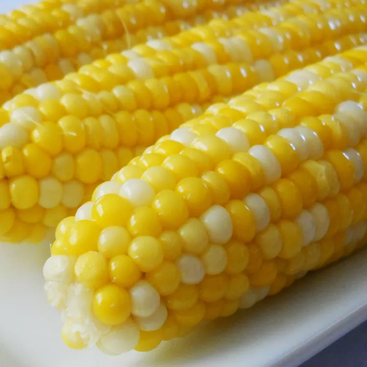

Corn on the Cob

Description
A simple and easy recipe for sweet corn on the cob. It is literally just boiling corn in sugar water.
Ingredients
2 tablespoons white sugar
1 tablespoon lemon juice
6 ears corn on the cob, husks and silk removed
Steps
- Fill a large pot about 3/4 full of water and bring to a boil
- Stir in sugar and lemon juice until sugar dissolved
- Place ears of corn into boiling water, cover the pot, turn off the heat
- Let corn cook in the hot water until tender, about 10 minutes